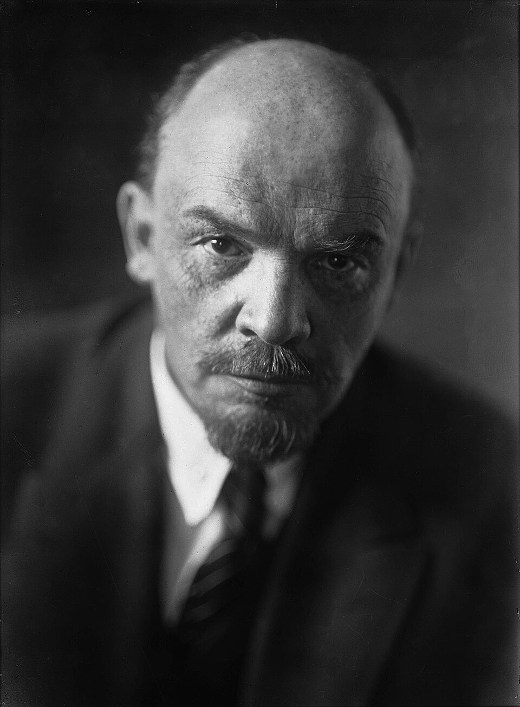

学习，学习，再学习！
Vladimir Ilyich Lenin 1870 — 1924
无产阶级革命家、理论家 · 俄国布尔什维克党创始人 · 苏维埃国家缔造者

1924
ЛЕНИН · 列宁
1924 年 1 月 21 日 18 时 50 分，弗拉基米尔·伊里奇·列宁在莫斯科近郊哥尔基村逝世，享年 53 岁。全苏联陷入深切悲痛，此后在莫斯科红场修建列宁墓，遗体保存至今。


 全世界无产者，联合起来！
全世界无产者，联合起来！